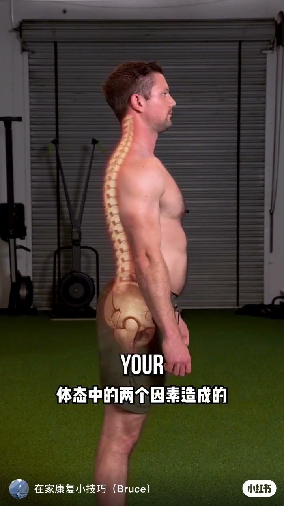
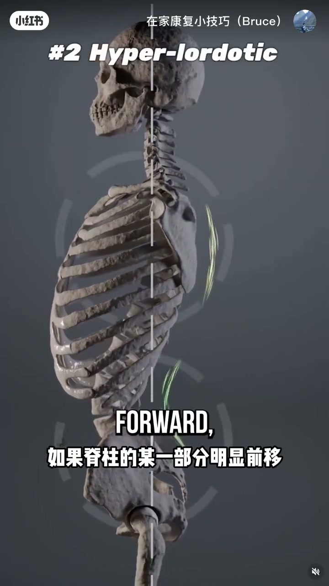
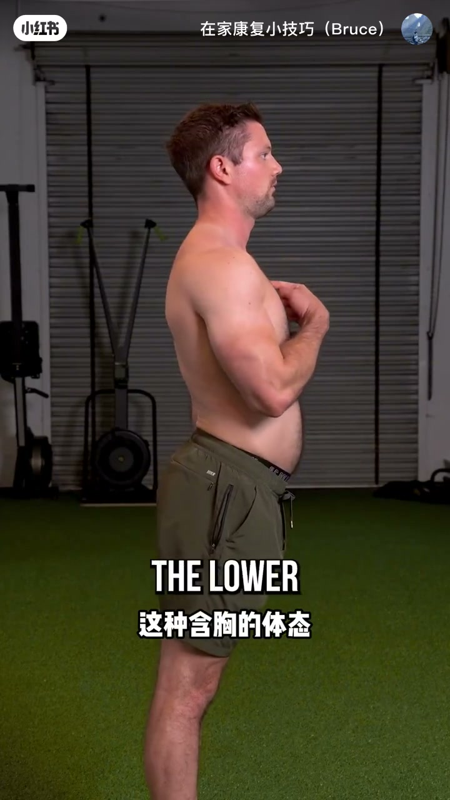
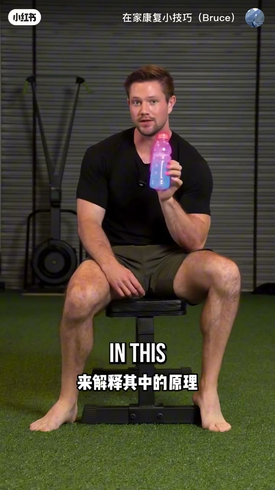
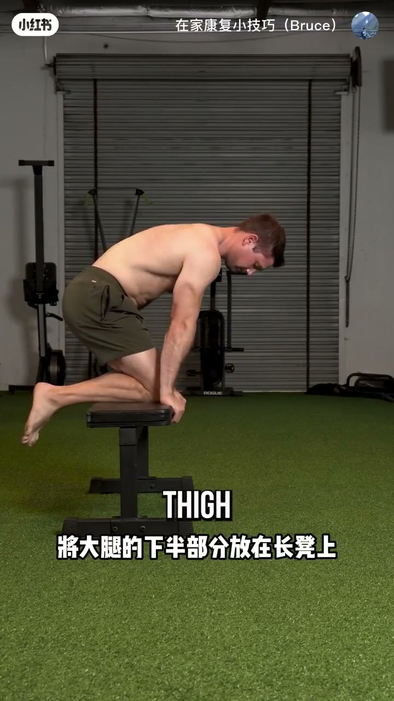
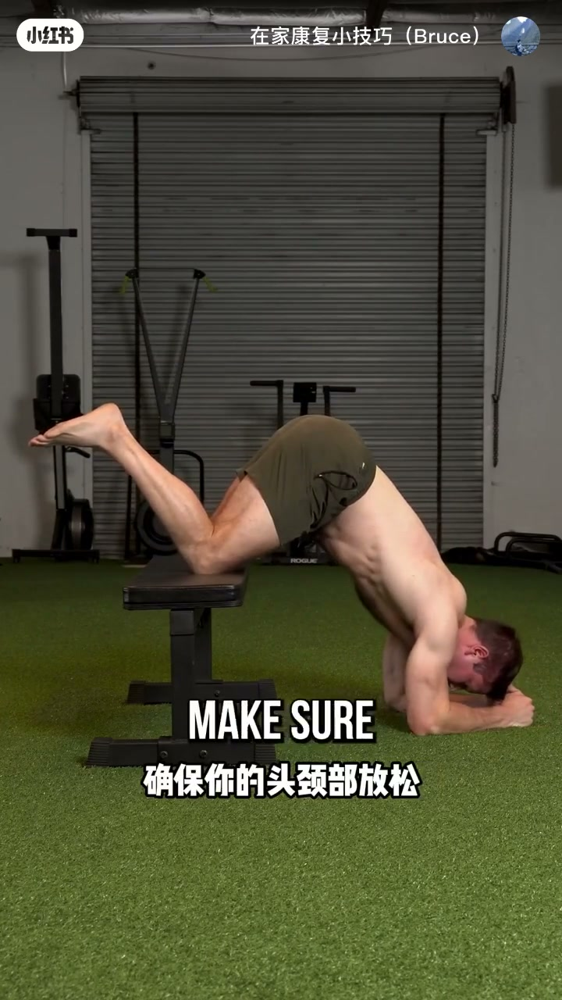

内容要点
这是一条体态科普 + 居家纠正短片：先讲「为什么显肚子」，再给一个可立刻做的倒置呼吸练习。
知识结构
骨盆前倾、腰椎前伸把腹部向前推；脊柱某段前移时，上背常反射性后移，胸口下沉含胸，进一步放大下腹突出。
胸口卡在压缩状态会限制空气进入与扩张；长期更紧缩，也限制上半身活动。很多人忽略的方案是：改善胸口前侧扩张，让日常也能保持打开。
直立时肺受重力影响多从下往上充气；倒置后更易从上往下充盈，并集中扩张身体前侧——借此打开胸口空间、让「内容物」略向上移。
大腿下半放在约椅子高度的支撑上，进入倒置姿势：大腿承重、头颈与胸肌放松，鼻吸口呼做缓慢深呼吸；两组、每组十次。支撑过高不舒服可降低，但不要高于头。
显肚子可能是骨盆前倾 + 含胸代偿的体态结果；与其只盯腹肌，不如先用倒置放松呼吸打开胸口前侧。
体态链条：骨盆前倾如何「推」出小肚子
00:00→00:09开场直接点题：下腹部突出，主要来自体态里的两个因素。首先是骨盆前倾，同时腰椎向前伸展，会把腹部向前推。画面用侧身解剖叠图标出腰椎过度前凸与骨盆前倾，黄箭头对准下腹凸起。

00:09→00:21作者补充：事情不止于此。若脊柱某一部分明显前移，为保持重心，另一部分常会反射性后移——一般是上背部后移，胸口下沉、受压缩。骨骼侧视图配合虚线重心轴，标出腰椎前移与上背代偿。

转录里「寒胸」按画面字幕与语境校正为「含胸」；完整转录区仍保留 Whisper 原文作证据。
含胸紧缩：为什么胸口打不开会更显腹
00:21→00:41真人侧身演示含胸：手点胸口，肩向前沉、下腹更显。作者强调：胸口卡在压缩状态，会限制空气正常进入并扩张胸口；时间一久，胸口越难向前扩张就越紧缩，下腹突出加重。更关键的是，上半身运动也会被限制很多。

00:41→00:55因此一个很多人容易忽略的方案，是改善胸口前侧的扩张能力，让日常生活里这个空间更好保持打开。接下来的训练更偏向打开这个空间，并让「这里的内容物」稍微向上移动一些——然后进入倒置姿势。
瓶子类比：倒置后空气如何从上往下充盈
00:55→01:18作者坐在长凳上，举起装有蓝色液体的透明瓶解释原理：平常呼吸时，肺受重力影响多从下往上充满空气；若把瓶口一侧当作「头部」再倒置，相对会更多从上往下获得充盈，并更集中扩张身体前侧——可以借用这一点来改善胸口打开。

椅子倒置呼吸：放松打开胸口前侧
01:18→01:26器材要求不高：约这么高的长凳或椅子即可。把大腿下半部分放在长凳上，再进入倒置姿势。

01:26→01:50关键细节：尽可能保持放松，让大腿支撑身体大部分重量；头颈部放松、胸肌也尽量放松，再做缓慢而深沉的膈式呼吸（鼻吸、口呼），减少身体紧张，让胸口前侧在没有额外限制时自然扩张到最大。

01:49→01:58处方很清楚：试着做两组、每组十次缓慢呼吸。若这么高的支撑不舒服，可换更低高度——只要支撑物不要高于头部即可。
转录「格式呼吸」按语境校正为「膈式呼吸」；「头颈不放松 / 宽不高于头部」对照画面字幕分别为「头颈部放松」「不要高于头部」。以上仅为编辑释义，原文见文末转录。
找一把高度合适的椅子 → 大腿承重进入放松倒置 → 鼻吸口呼、两组×10 次慢呼吸 → 过高不舒服就降低支撑。